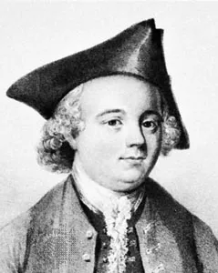

|
John Kay (1704-1779) è stato un inventore inglese noto soprattutto per il suo lavoro nel settore tessile durante il XVIII secolo.
John Kay nacque nel Lancashire, in Inghilterra, nel 1704. Lavorò come tessitore e inventore, contribuendo in modo significativo allo sviluppo dell'industria tessile.
La sua invenzione più famosa fu la "navetta volante", che brevettò nel 1733. Questo dispositivo migliorò notevolmente il processo di tessitura, consentendo una maggiore velocità e efficienza nella produzione di tessuti. La navetta volante permetteva alle tessitrici di muovere rapidamente il filo attraverso il telaio, accelerando il processo di tessitura e aumentando la produttività.
L'invenzione della navetta volante di Kay ebbe un impatto significativo sull'industria tessile. La maggiore velocità di tessitura consentì una produzione più rapida e economica dei tessuti, contribuendo allo sviluppo dell'industria tessile inglese e all'espansione della produzione di tessuti di cotone.
Nonostante il successo della sua invenzione, Kay ebbe difficoltà finanziarie e affrontò controversie legali legate al suo brevetto. Le sue innovazioni furono oggetto di litigi con altri produttori tessili, che cercavano di sfruttare la sua invenzione senza pagare i diritti d'autore.
La navetta volante di John Kay fu un importante passo avanti nell'automazione del processo di tessitura e contribuì alla rivoluzione industriale britannica. La sua invenzione rese possibile una maggiore produzione di tessuti a costi più bassi, accelerando il processo di industrializzazione e trasformando l'industria tessile.

|
|